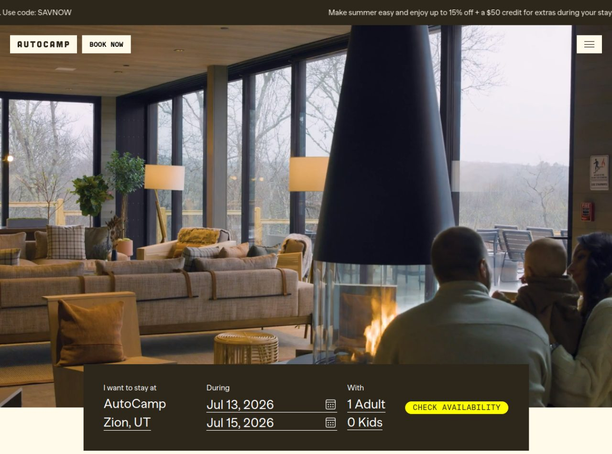
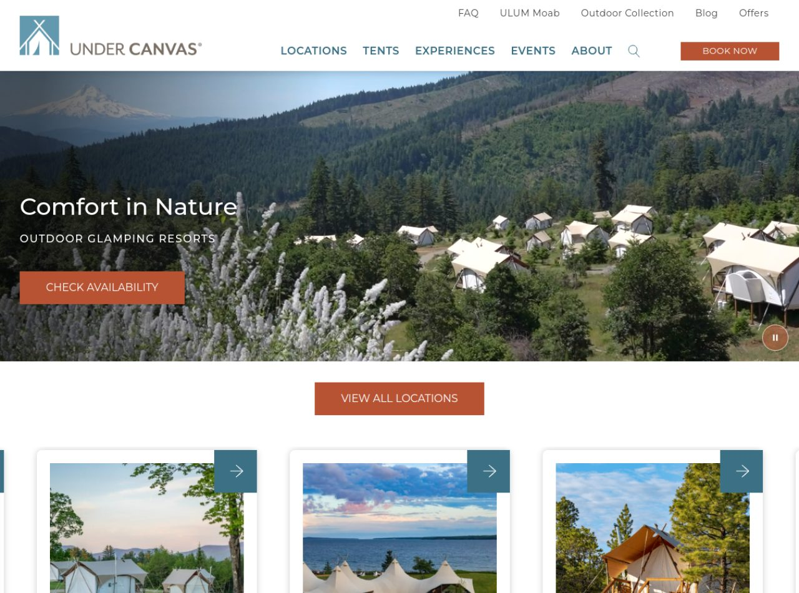
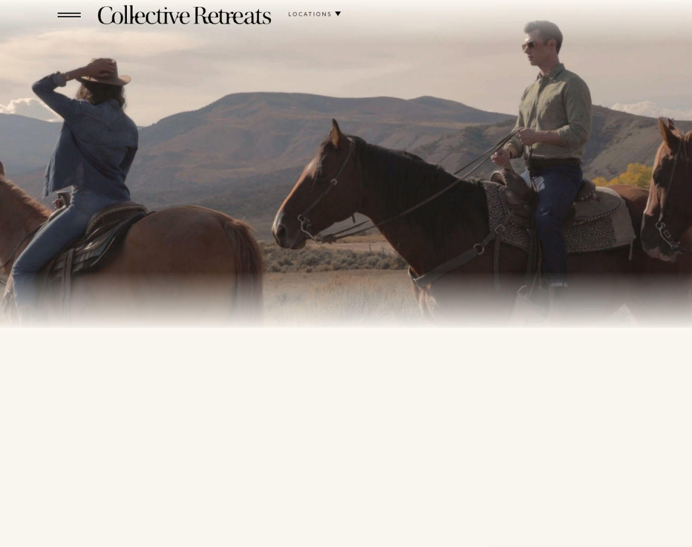

Análisis de 3 marcas de glamping de lujo referentes del mundo, y qué debemos replicar para que nuestros glampings del Huila (San Agustín, Tatacoa, Rivera…) vendan la experiencia y reserven online.
Hotel-boutique en la naturaleza, resort de glamping y viaje de lujo/experiencia.

Foto cálida y cinematográfica del interior con fogata y ventanales a la naturaleza. Comunica confort de hotel dentro del bosque. Aspiracional y acogedor.
Video de fondo, carruseles Swiper, animaciones Rive. Acento amarillo neón en los botones para que "salten".
Oferta → nav con "Book Now" → hero con buscador de reserva integrado. Todo orientado a comprobar disponibilidad ya.
Tipografía monoespaciada/estilo "outdoor" con carácter; titular "Where boutique hotel meets nature escape". Poco texto, mucha imagen.
Title "Nature's Boutique Hotel", meta con lista de destinos (Joshua Tree, Yosemite, Zion…) para SEO por parque. JSON-LD.
Widget de reserva en el hero + oferta con código + $50 en extras. Reduce la fricción de reservar a segundos.

Toma aérea espectacular del campamento de carpas safari en un valle boscoso con montaña nevada. Da escala y deseo. La foto vende el destino entero.
Video hero con control de pausa, animaciones Rive, tarjetas de ubicación con hover. Elegante y fluido.
Doble nav (utilitario + principal), hero → "View all locations" → grilla de destinos. Modelo multi-sede muy claro.
Serif + sans en armonía, acento terracota natural, "Comfort in Nature" grande. Sensación premium-terroso.
Title "Upscale Outdoor Accommodations", meta con destinos (Yellowstone, Moab, Zion…), 2 bloques JSON-LD (organización + producto). SEO por parque nacional.
"Check Availability" fijo, sección "Offers", grilla de ubicaciones con CTA por cada una. Reserva directa sin OTAs.

Video cinematográfico de experiencias (cabalgata en paisaje dorado). Vende el recuerdo y el estilo de vida, no la carpa. Máxima aspiración.
Video full-bleed con transiciones suaves. El lujo se expresa con quietud y espacio, no con animaciones llamativas.
Navegación reducida al mínimo (logo + "Locations") para no distraer del video. La marca confía en la imagen para seducir.
Serif editorial elegante tipo revista de viajes de lujo. Menos es más: casi no hay texto en el hero.
Title "Luxury Camping Destinations & Resorts", meta "Redefine travel… luxury outdoor hospitality in stunning, unique locations". Posiciona por "lujo + experiencia".
Entrada por "Locations" → cada destino con su propia narrativa y reserva. Vende primero el sueño, luego la fecha.
Qué toma prestado cada referente.
| Dimensión | AutoCamp | Under Canvas | Collective Retreats |
|---|---|---|---|
| Ángulo | Hotel boutique + reserva | Resort multi-sede | Viaje de lujo / experiencia |
| Titular | "Boutique hotel meets nature" | "Comfort in Nature" | Video (casi sin texto) |
| Imagen | Lounge con fogata | Vista aérea del campamento | Cabalgata al atardecer |
| Reserva | Widget en el hero | "Check Availability" fijo | Por destino / narrativa |
| Paleta | Oscuro + amarillo neón | Terracota natural | Neutros de lujo + serif |
| Qué robamos | Widget de reserva + oferta con código | Foto aérea con drone + grilla de destinos + SEO por lugar | Video de experiencia + minimalismo aspiracional |
*_full.png).